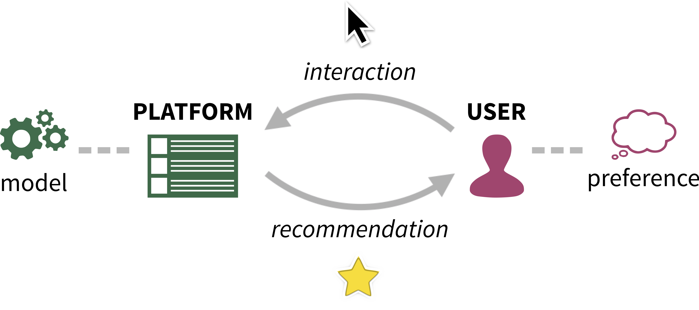

Algorithmic Confounding in Recommendation Systems
Recommendation systems occupy an expanding role in everyday decision making, from choice of movies and household goods to consequential medical and legal decisions. The data used to train and test these systems is algorithmically confounded in that it is the result of a feedback loop between human choices and an existing algorithmic recommendation system. We are currently exploring the impact of algorithmic confounding in this context.
The first phase of this project was to explore this feedback loop via simulations. The next (current) phase of this project involves loosening some of the assumptions required for simulations and replacing simulated user behavior with constrained real-life user behavior in a game-like environment.
Citation
@inproceedings{Chaney:2018,
author = {Chaney, Allison J.B. and Stewart, Brandon M. and Engelhardt, Barbara E.},
title = {How Algorithmic Confounding in Recommendation Systems Increases Homogeneity and Decreases Utility},
booktitle = {Proceedings of the 12th ACM Conference on Recommender Systems},
series = {RecSys '18},
year = {2018},
isbn = {978-1-4503-5901-6},
pages = {224--232},
doi = {10.1145/3240323.3240370}
}Resources
- How Algorithmic Confounding in Recommendation Systems Increases Homogeneity and Decreases Utility [via ACM Digital Library] [via arXiv]
- RecSys '18 talk slides [PDF]